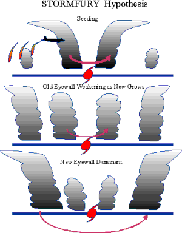

DOSSIER A42-CE-03 // CLIMATE & ENVIRONMENT
Project Stormfury: hurricane modification experiments


The claim
Claim: Stormfury proved officials could control hurricanes; it attempted seeding, but subsequent research did not establish reliable modification. This file tests the narrow allegation rather than treating secrecy, coincidence, or public controversy as evidence by themselves.
Chronology
Federal experiments ran 1962–1983; early apparent weakening was reconsidered after similar changes appeared in unseeded storms. Chronology helps separate contemporaneous knowledge from later interpretation; sequence alone cannot establish a causal relationship.
Primary record and data
NOAA records preserve flights and observations, documenting experiments but not precise steering or repeatable landfall control. Original records establish what was measured or decided, while independent work is needed to test methods and institutional conclusions.
Independent scientific evidence
Eyewall cycles, wind shear, and ocean heat alter storms naturally; silver iodide was poorly matched to hurricane cloud structure. Convergent observations and a plausible mechanism carry more weight than a single image, anecdote, or disputed quotation.
Alternative explanations
A few uncontrolled cases cannot distinguish treatment from natural intensity changes; later observations weakened the hypothesis. A strong alternative must explain the observations and remain open to disconfirmation; ordinary causes deserve the same scrutiny as extraordinary ones.
Limitations and uncertainty
Weather attribution is constrained by natural variability, incomplete operational logs, and the absence of controlled counterfactuals; these gaps do not turn coincidence into causal evidence. Uncertainty is stated explicitly rather than treated as support for the strongest version of a claim.
Calibrated verdict
Research attempts were real; effective hurricane modification is unproven and the program ended as its rationale weakened. Documented research, emissions, negligence, or secrecy should not be conflated with a broader unsupported coordinated plot.
Testable evidence requirements
Require preregistered trials, comparable storms, flight logs, controls, calibrated instruments, and effects exceeding natural variability. A persuasive claim specifies what new evidence would change the assessment and allows independent replication, including negative results.
Sources and source limits
- NOAA AOML, Project STORMFURYProgram history describes experiments and revised interpretation.
- Simpson et al., Hurricane Modification Experiment of 1961, SciencePeer-reviewed contemporary account predating later reassessment.
- National Academies, Critical Issues in Weather Modification ResearchIndependent review of efficacy evidence and experimental design.